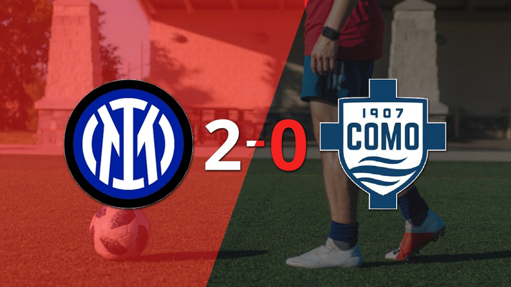
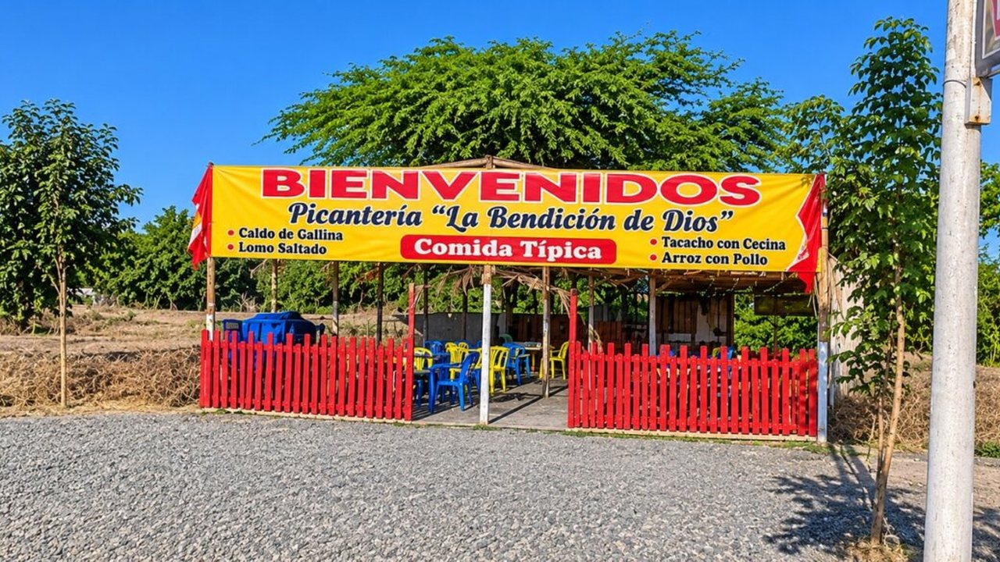
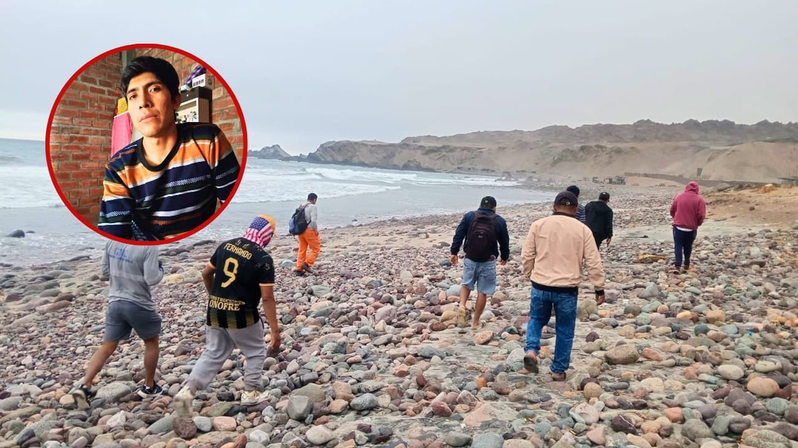
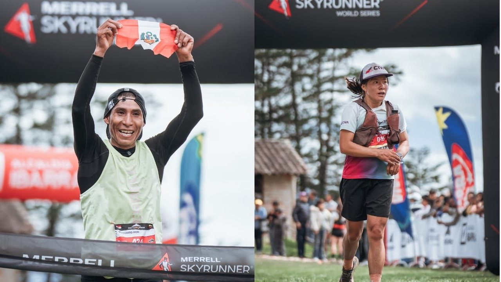

Mientras continúa el proceso de investigación, la joven pide justicia y recuerda que su hijo de apenas tres años sigue preguntando por su padre y esperando que regrese a casa. Durante una reciente visita a la hacienda, la familia pudo conocer las dimensiones de la estructura, que tendría entre 25 y 30 metros de profundidad.




Mientras continúa el proceso de investigación, la joven pide justicia y recuerda que su hijo de apenas tres años sigue preguntando por su padre y esperando que regrese a casa. Durante una reciente visita a la hacienda, la familia pudo conocer las dimensiones de la estructura, que tendría entre 25 y 30 metros de profundidad.
Para realizar los trámites de renovación de DNI y duplicado de DNI azul a electrónico, los ciudadanos necesitan la aplicación DNI Bio Facial3.0. Recomendaciones de Reniec para realizar trámites virtuales Si el trámite requiere una nueva fotografía para el DNI, Reniec recomienda tomarla con buena iluminación, fondo blanco y sin sombras.
El papa León catorce llegó este domingo a Argentina, procedente de Uruguay, para una visita apostólica que desarrollará hasta el próximo miércoles, la primera de un papa en casi 40 años a este país.
Manchester United vive una de sus peores temporadas de la historia. Y es que este domingo empató a cuatro con el Aston Villa en condición de local, por lo que está en puestos de descenso en la Premier League hacia la segunda división de la próxima campaña.
Diputado Marlon Aguirre denuncia bloqueo de siete proyectos por parte de Ernesto Zunini El parlamentario acusó al vocero de su bancada de no firmar ni tramitar sus iniciativas.
Telekino es un juego de azar de lotería argentino, creado el 26 de abril de 1992 por la Caja Popular de Ahorros de la Provincia de Tucumán.
La secretaria general del Jurado Nacional de Elecciones (JNE), Yessica Elisa Clavijo Chipoco, explicó que los actuales alcaldes que postularon como primeros regidores no podrán volver a ocupar la alcaldía si ejercieron ese cargo durante el periodo municipal inmediato anterior.
Carlos Thornton sorprendió al recordar una de las anécdotas más insólitas que vivió junto a Christian Meier cuando ambos comenzaban a ganar popularidad en la televisión. Carlos Thornton reconoció que Christian Meier probablemente tenía más popularidad entre las chicas.
En el asentamiento humano Señor de los Milagros, en Chincha Alta, una niña durante tres años venía siendo víctima de tocamientos indebidos. El jueves, al promediar, las 6 de la tarde se presentó la denuncia en la comisaría de Chincha Alta por tocamientos indebidos en agravio de la niña.
Cada edición dura menos de dos minutos. En la web tienes el resumen de cada historia y el enlace directo al medio original para leerla completa.
Conoce Olfatecho →